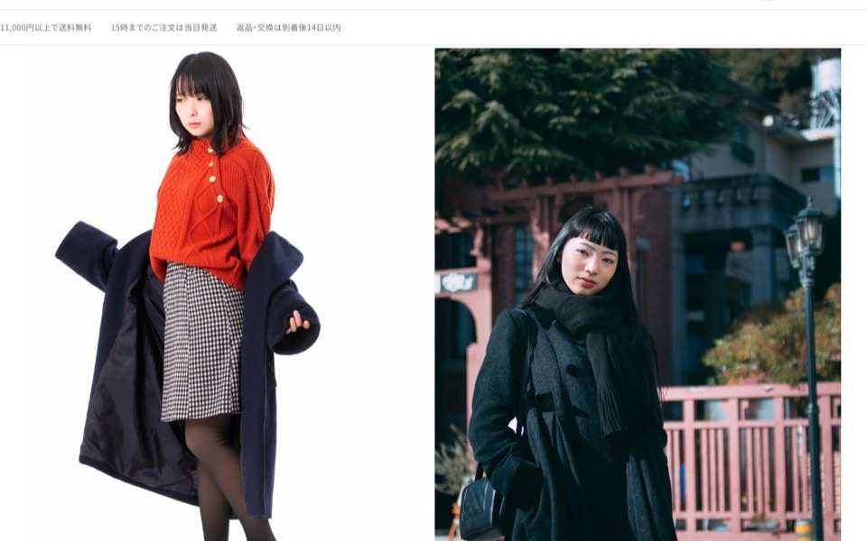
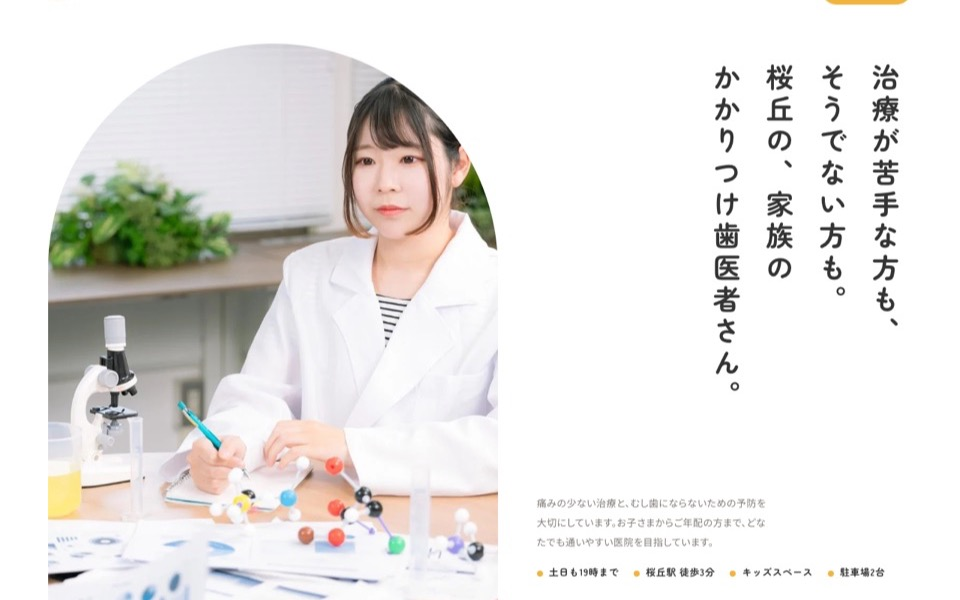
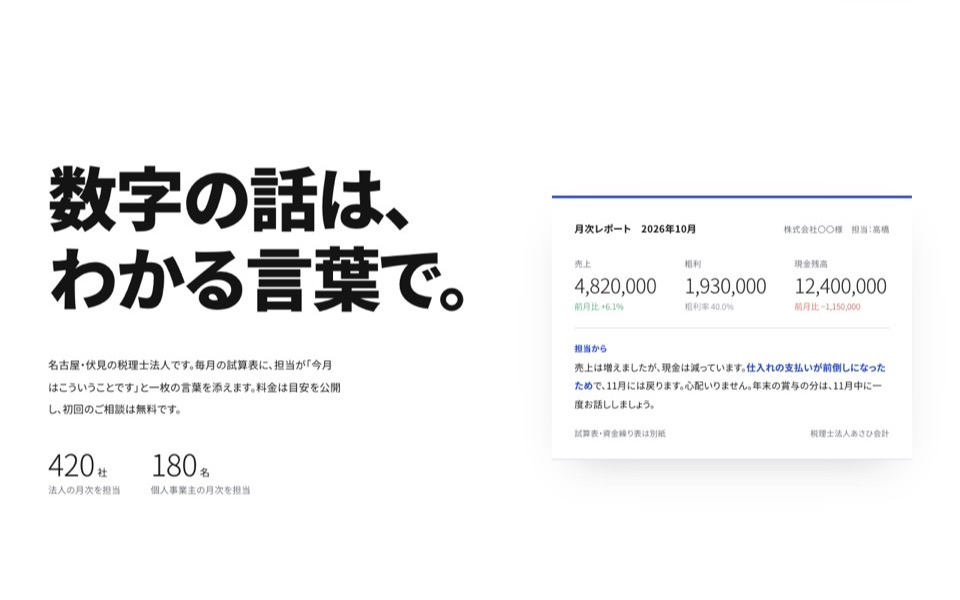
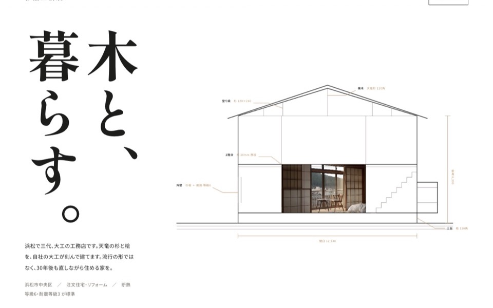
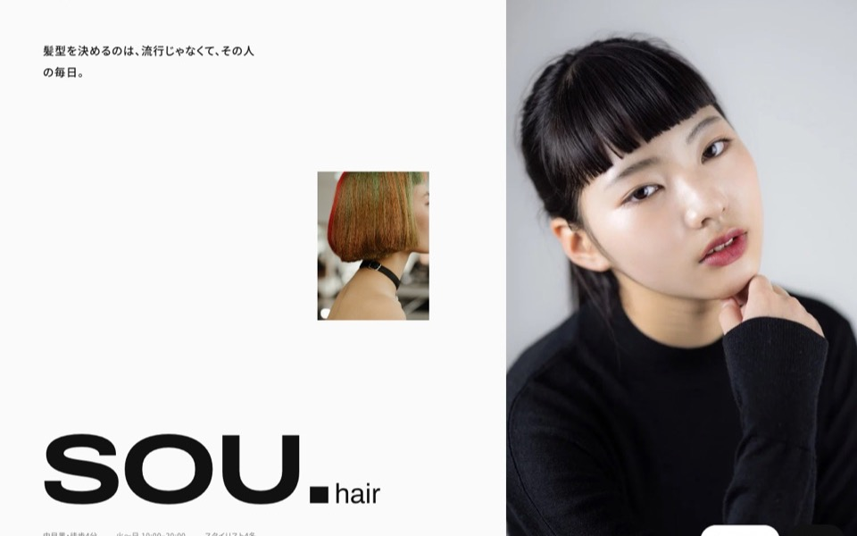
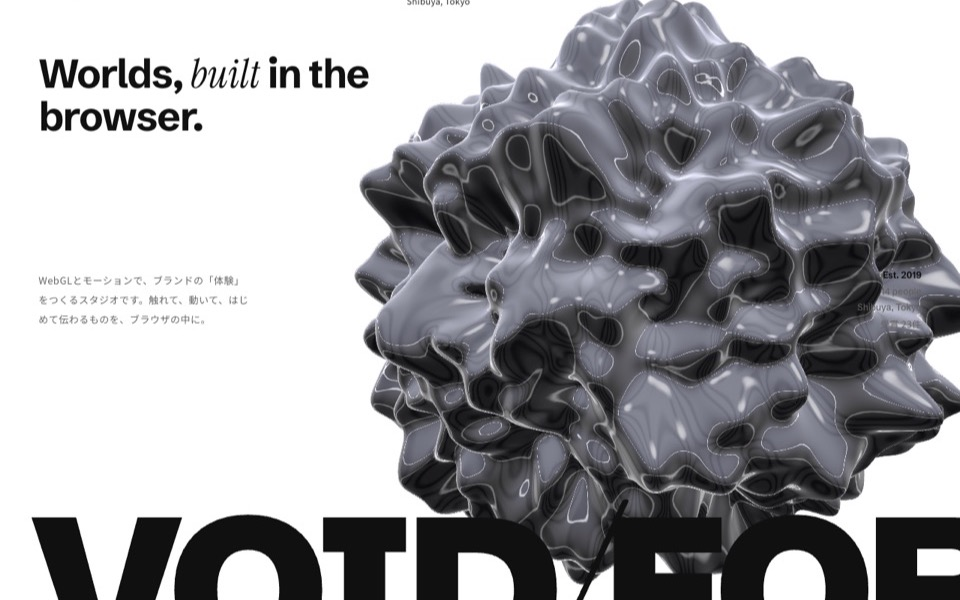

10の業種、10のサイト。
アパレルのEC、歯科医院、部品メーカー、コーヒー豆の通販、器の店、税理士事務所、工務店、温泉旅館、美容室、Web制作会社。会社はどれも架空ですが、本物の依頼と同じ手順で、業種ごとに構成と文章を考えてから作りました。予約・見積もり・カートは、入力から確認、完了画面まで画面上で動きます。
ASAGI（アパレルEC）アパレルの通販サイト。本物のECと同じ画面構成で、管理画面まで。一覧（絞り込み・並べ替え）、商品詳細（色・サイズ・在庫）、カート、レジ4段階、マイページ、管理画面（売上・注文・在庫・顧客）

ひだまり歯科クリニック歯科医院。アーチの写真と縦書きの一文、診療時間の表。WEB予約（日時→連絡先→確認→完了）、診療案内、お知らせ

株式会社ミナト精機精密部品メーカー。全幅の工場写真と、写真に引いた寸法線。 図面を送って見積もり（ファイル・部品表→会社→確認）、工場見学
図面を送って見積もり（ファイル・部品表→会社→確認）、工場見学
KUMO ROASTERYコーヒー豆の通販。左に固定の写真、右は白。下へ行くほど深煎り。 かご（数量と合計）、レジ（配送先・支払い・確認）、定期便
かご（数量と合計）、レジ（配送先・支払い・確認）、定期便
土と火器の店。一点ずつ、漢数字と縦書きの題で。 商品ページ、かご、レジ（桐箱・のし・支払い）
商品ページ、かご、レジ（桐箱・のし・支払い）
税理士法人あさひ会計税理士事務所。巨大な見出しと、月次レポートの紙1枚。料金表、初回相談の申し込み（内容→日時→連絡先→確認）

杉浦工務店工務店。巨大な縦書きと、線が描かれていく家の断面図。施工事例、工程表、見学会の申し込み（日時の枠→家族→連絡先）

湯宿 ゆらぎ温泉旅館。到着から翌朝の出発まで、時刻とともに背景が暮れて明ける。 予約（日程→空き部屋と見積もり→お客さま→確認）
予約（日程→空き部屋と見積もり→お客さま→確認）
SOU.hair美容室。写真1枚と、巨大なワードマーク。予約（メニュー→スタイリスト→日時→連絡先→確認）

VOID/FORMWeb制作会社。3Dの金属とスクロールに合わせた動き。3D表示、スクロール演出、横スクロールの事例一覧
